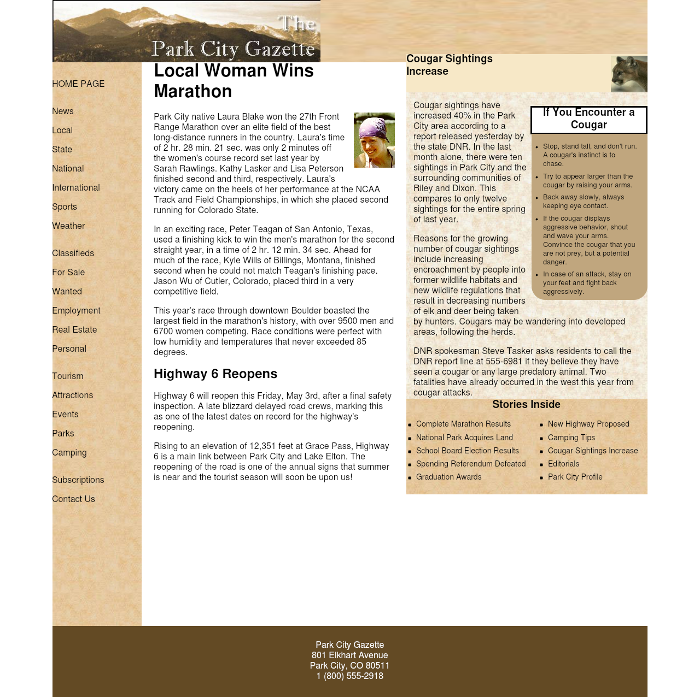
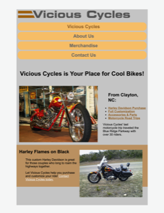
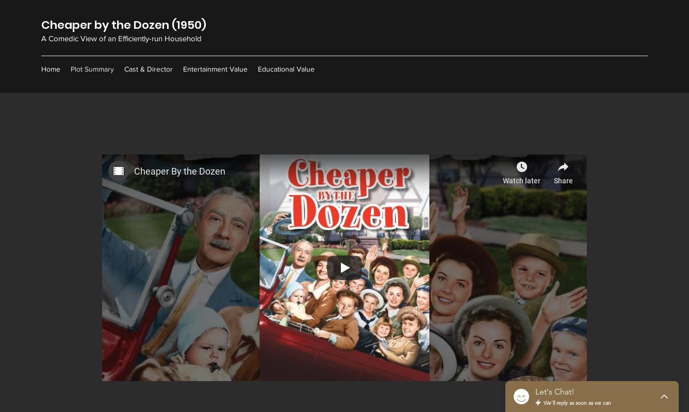

Malinda Johnson
Homeschool Mom to Full-Stack Programmer
Almost twenty years ago, I made the decision to step down from full-time mainframe programming to raise my children. Since then, I have successfully graduated all three of my children from our homeschool and integrated them into four-year colleges.
When faced with the prospect of returning to work, I found that technology had advanced to the point that new skills and languages were required in order to be competitive in the job market. Thus began my new journey of transforming from a homeschool mom into a web developer and future full-stack programmer.
Featured Projects
View selected projects below. More information can be found at MalindaPortfolio@wordpress.com
WEB110 Final Project
My final project in WEB110 was to design a newspaper style web page.
WEB110 Final ProjectWEB140 Final Project
My final project in WEB140 was to design a website for a mock company called vicious cycles.
WEB140 Final ProjectHUM110 Wix Project
My HUM110 project was to use wix.com to produce a movie review containing plot summary, cast. entertainment value, and educational value. The movie selected was "Cheaper by the Dozen" which detailed the life of Frank Gilbreth who was a pioneer in time and motion study at the turn of last century.
MovieReview@wix.comWork Experience
I am excited to learn about emerging technologies while providing accessible and responsive web designs for the future. Although my current goal is to become a proficient web developer, my long-term goal is to combine my previous background of mainframe programmer with new programming languages and web development tools to become a full-stack web developer.
Student Trainee
Caterpillar, Inc.
January 2020 to Present
Use Axure for rapid prototyping of display applications for Simulation Engineering.
Homeschool Teacher
Johnson School
November 2007 to May 2019
- Selected curriculum, created lesson plans, and instructed on various subjects.
- Administered co-op science labs in physical science, biology, chemistry, and physics.
- Science Olympiad middle and high school coach.
- Board member for Johnston County Home Educators (JCHE).
Education
Wake Technical Community College - Raleigh
IT - Web Developer, AAS
December 2021
Indiana University - Kokomo
General Studies, BGS
December 1992
Professional Accreditations
IT - Web Development Basics, Certificate
May 2020
IT - Foundations, Certificate
May 2020
IT - Programming Fundamentals, Certificate
December 2019
MTA, Seccurity Fundamentals
December 2019
MTA, Networking Fundamentals
October 2019
Fellow LIfe Management Institute (FLMI), with Distinction
June 1997